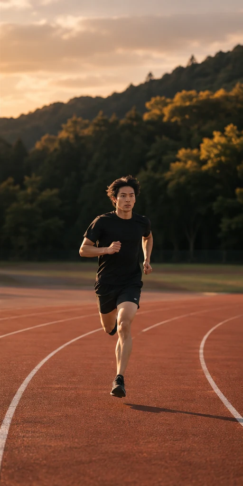

CAFE & COFFEE
↗喫茶 こもれび
ひと息を、味わう。
01 / カフェ・飲食店
お店の空気まで、伝える。
ゆっくり過ごしたい人に向けた、街角の喫茶店。
- 目的
- 来店前の不安を減らし、訪れるきっかけに。
- 工夫
- 柔らかな色、明朝体、写真を生かした余白。
- 確認できる機能
- メニュー切替・店舗案内・予約デモ
自主制作／架空サイト
デモサイトを見る ↗お店・地域の企業・活動する人のための WEB制作
はじめての出会いから、次の一歩へ。
目的を整理し、デザインと使いやすさを
ひとつずつ、丁寧につくります。
DESIGN / DEVELOPMENT / RESPONSIVE
SELECTED WORKS / 01
同じ型に当てはめず、届けたい相手に合わせて。
3つの自主制作サイトで、設計の違いをご覧ください。
ひと息を、味わう。
01 / カフェ・飲食店
ゆっくり過ごしたい人に向けた、街角の喫茶店。
自主制作／架空サイト
デモサイトを見る ↗
日々を育む、木の住まい。
02 / 工務店・地域企業
暮らしの相談から始まる、地域の工務店。
自主制作／架空サイト
デモサイトを見る ↗
その一歩を、超えていく。
03 / スポーツ選手・活動者
陸上競技に取り組む架空の選手の活動サイト。
自主制作／架空サイト
デモサイトを見る ↗WHAT I DO / 02
つくる前の整理から、つくった後の更新まで。
規模や内容に合わせて、一緒に考えます。
お店や活動の魅力を整理して、構成・デザイン・実装まで考えます。
画面幅に合わせて文字や写真を調整。メニューやボタンも操作しやすく設計します。
文章の差し替えや表示崩れなど、既存の構成を確認して修正方法をご提案します。
画像の軽量化や情報の整理に対応。CMS・フォーム送信・予約システムは別途相談・構築が必要です。
この制作例は静的サイトです。管理画面、外部送信、実予約、決済は実装していません。
DESIGN WITH A REASON / 03
カフェは写真で空気感を伝え、メニューの価格は読みやすい一覧に。印象と情報の両方を大切にします。
施工例や活動報告はタップで切り替え。固定ナビゲーションと十分なボタンサイズで、次の行動へ導きます。
共通の相談先URLは1か所に集約。画像はローカルのWebPで配信し、画面下部は遅延読み込みにしています。
PROCESS / 04
目的、想定するお客様、お困りごとをお聞かせください。
必要なページと機能を整理。参考サイトやご希望も伺います。
文章と写真の準備状況を確認し、見せ方をご提案します。
決まったデザインを、各画面幅で使えるページにします。
実際の画面で内容と操作を一緒に確認します。
更新箇所と扱い方をご案内。納品方法は相談して決めます。
FAQ / 05
はい。必要な情報を一緒に整理するところからご相談いただけます。素材の用意や制作範囲は、内容に合わせて確認します。
はい。画面幅に応じたレイアウトで制作します。このページと3つのデモもスマートフォンに対応しています。
変更箇所と運用方法に合わせて設計します。このデモはHTMLの編集で更新できます。管理画面が必要な場合は別途ご相談ください。
インターネットに公開する場合は必要です。既存のご契約状況やご希望に合わせて方法を整理します。この制作例はローカル閲覧用です。
事業や活動の内容、サイトの目的、必要なページ、参考の雰囲気、公開希望時期を分かる範囲でお伝えください。料金や納期は内容を確認して相談します。
LET’S TALK
作りたいものが、具体的でなくてもご相談ください。
何を伝えるか、どんな形にするか。一緒に整理します。
相談先URL未設定時は、このサイト内でご相談の準備をご案内します。